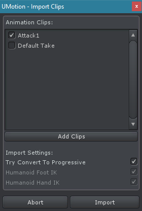
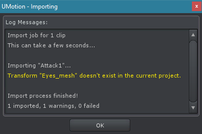

Import / Export
Exporting
By clicking on File ➔ Export All Clips all clips of the opened UMotion project are exported to the export directory. The export directory has to be set in the Project Settings.
The clips are exported using Unity's proprietary *.anim file format and can be used together with an Animator Controller or an Animation Component (legacy).
The exported clips are named the same way as they have been named in the project. Existing files will be overwritten / updated.
Exporting Humanoid: Unity 5.5 or higher is recommended
Due to a bug in all Unity 5.3 and 5.4 versions (see Known Issue 04) it is recommended ot use Unity 5.5 or higher when exporting humanoid animations.
Exporting Humanoid: IK Curves not supported
Humanoid clips usually contain curves named "LeftHandT", "LeftHandQ", "LeftFootT",... These curves are important when sharing (i.e. retargeting) animations between multiple characters whose arms and legs have different proportions. By enabling the Foot IK and Hand IK Solver in the Animator, the hand and foot position will be corrected by an IK solver to better match the original positions. This avoids hand and foot sliding artifacts. A detailed explanation can be found in the Unity Blog - Mecanim Humanoids (see Original hands and feet position).
Exporting humanoid IK curves is currently not supported by Unity and thus also not supported by UMotion. This feature is going to be implement soon.
Please note that this has nothing to do with the Inverse Kinematics constraint of UMotion. It will export and function as expected.
Importing Professional
By clicking on File ➔ Import Clips the Import Clips Dialog is opened. It can be used to import existing animations into the current UMotion project.
Import Clips Dialog
| UI Element | Description |
|---|---|
| Add Clips | Adds animation clips to the import list. It's possible to select *.anim files, UMotion project files or any 3D model file format supported by Unity. If one of the latter 2 was selected, all animation clips found in that file will be added to the import list. |
| Try Convert To Progressive | When enabled, all rotation properties are converted to Progressive Quaternion Rotation if possible without any loss in quality. |
| Humanoid Foot IK | Only available when the current project is of type Humanoid. When enabled, the Inverse Kinematics for Humanoid Feet is applied when importing. This ensures that the feet reach their original position which could not be the case when retargeting an animation to a character with different proportioned legs. More information: Unity Blog - Humanoids (see Original hands and feet position) |
| Humanoid Hand IK | Only available when the current project is of type Humanoid. When enabled, the Inverse Kinematics for Humanoid Hands is applied when importing. This ensures that hands reach their original rotation which could not be the case when retargeting an animation to a character with different proportioned arms. More information: Unity Blog - Humanoids (see Original hands and feet position) |
| Abort | Closes the import dialog window without importing any animation clip. |
| Import | Imports all animation clips selected in the list. |
While importing a dialog window displays log messages regarding the ongoing import process. White messages are information, yellow are warnings and red are errors. Don't close this window before the import process has finished.
Importing Dialog
The following table provides an overview of the import compatibility depending on the animation rig type:
| Importing Legacy | Importing Generic | Importing Humanoid | |
|---|---|---|---|
| Legacy Project | Yes | Yes | No |
| Generic Project | Yes | Yes | No |
| Humanoid Project | Yes | Yes | Yes |